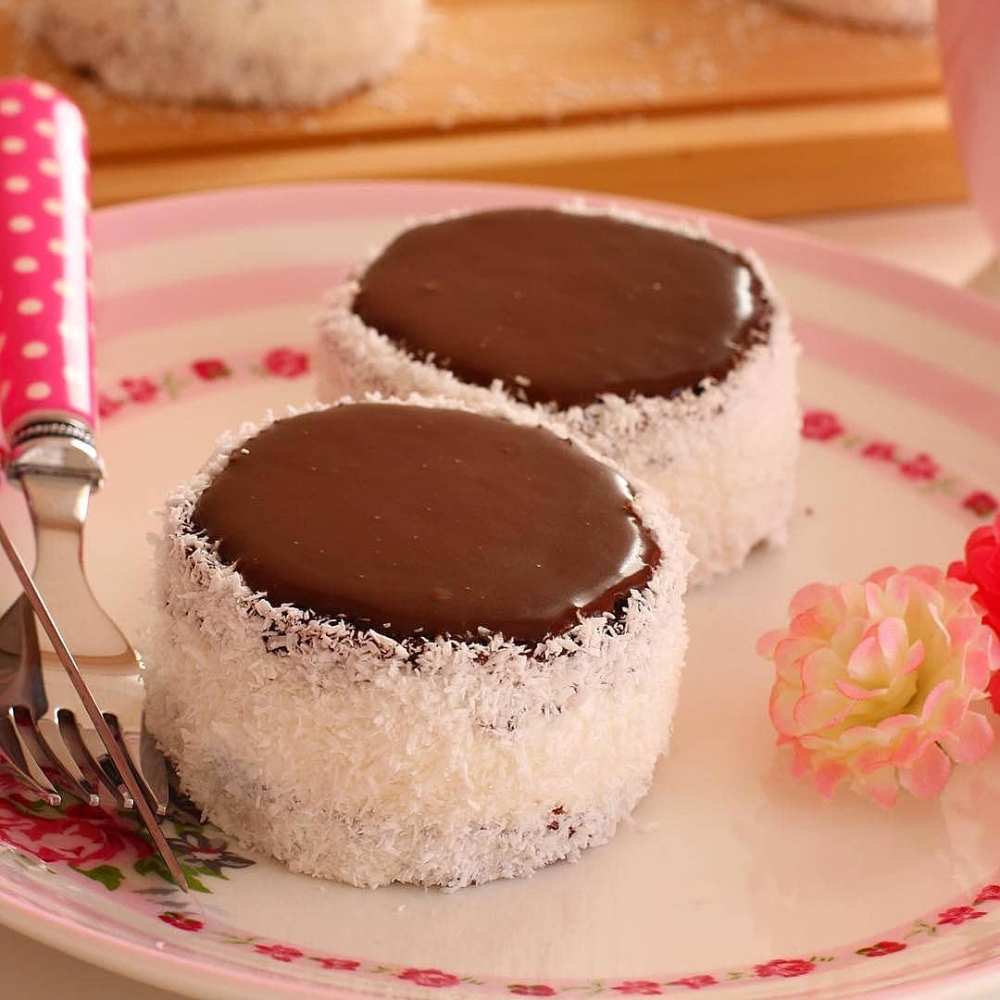

///İmam Sarığı Tatlısı\\\
Görüntüsü ve lezzetiyle hayran kalacağınız İmam Sarığı tatlısı.
Tarifi İçin Malzeme Listesi
| Tarifi İzlemek İçin Resime Tıklayın |

- 4 adet yumurta
- 1 su bardağı toz şeker
- 1 su bardağı un
- Yarım paket kabartma tozu
- 1 paket vanilya
- 3 yemek kaşığı kakao
- 3 yemek kaşığı su
Krema
- 3 su bardağı süt
- 1,5 yemek kaşığı un
- 1 yemek kaşığı nişasta
- yarım su bardağı toz şeker
- 1 yumurta sarısı
- 1 paket vanilya
İmam Sarığı Tatlısı Tarifi Nasıl Yapılır?
- İmam sarığı tatlısının kekini hazırlamak için öncelikle yumurtayı ve şekeri iyice çırpıyoruz.
- Sonra diğer malzemeleri karıştırıp çırpmaya devam ediyoruz.
- Fırın tepsisine yağlı kağıt koyuyoruz.
- Kek hamurunu ince bir tabaka olacak şekilde spatula yardımı ile güzelce yaydırıp, önceden ısıtılmış 170 dereceli fırında yaklaşık 20 dakika pişiriyoruz.
- Kremanın bütün malzemelerini uygun bir tencerede pürüzsüz bir kıvam alana kadar karıştırıp daha sonra ocağa alarak orta ateşte, sürekli karıştırarak pişiriyoruz.
- Muhallebimiz kıvam aldıktan sonra ocaktan alalım ve ara ara karıştırarak soğumaya bırakalım.
- Kekimiz soğuduktan sonra su bardağını ıslatıp kekleri bardakla kesiyoruz. Aşağı yukarı 20 tane yuvarlak çıkıyor. Dilerseniz kurabiye aparatı ile de yapabilirsiniz.
- Kestiğimiz keklerden 10 tanesini uygun bir tabağa alalım.
- Keklerden birine bir kaşık krema koyup üzerine kalan 10 kekten birini kapatıyoruz ve kenarlarına pasta sıvama aparatı ya da bıçak ile krema sürüp daha sonra Hindistan cevizine buluyoruz.
- Diğer bütün kekleri bu şekilde yaptıktan sonra benmari şeklinde erittiğimiz çikolatadan üzerlerine birer kaşık koyup kenarlarına taşırmadan yayıyoruz. Üzerini dilediğimiz şekilde süsleyerek dolaba koyuyoruz.
- Soğuduktan sonra imam sarığı tatlısı servise hazır. Deneyeceklere şimdiden afiyet olsun.
- Kekinizi keserken kurabiye aparatı, su bardağı ya da biraz daha küçük pastalar elde etmek isterseniz çay bardağı ile kesebilirsiniz. Aynı zamanda kullanacağınız aparatı ya da bardağı her kesimden sonra suya batırırsanız kekiniz yapışmaz ve işiniz kolaylaşır.
- Eğer kekinizi kakaolu tercih etmiyorsanız sade olarak da hazırlayabilirsiniz.
- İmam sarığı kekinin kuru olmasını istemiyorsanız pişirme süresine çok dikkat etmelisiniz. En fazla 20 dakikada kekiniz dilediğiniz yumuşaklığa kavuşacaktır.
Afiyet olsun...